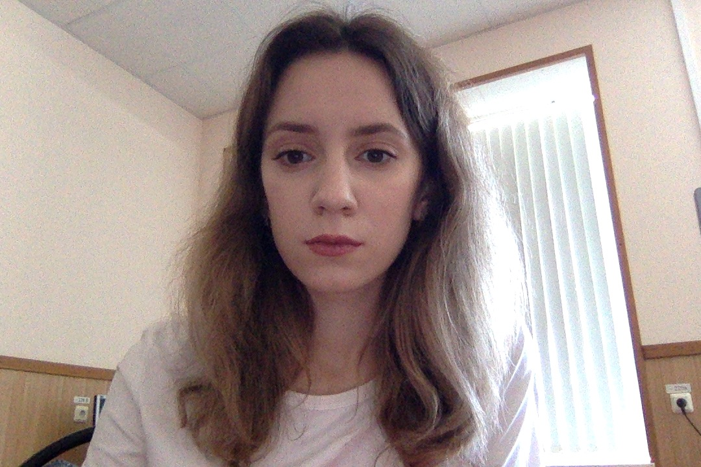

Katya Dubtsova
Tel.: +7 917 3230501
E-mail: cdubtsova@yandex.ru
GitHub: Katunya
Skills
- Front-end development: HTML, CSS, JavaScript, Less, Sass, Responsive UI, AJAX
- Version control: GitHub, Bitbucket
- Databases: MySQL Tools: IntelliJ IDEA / Webstorm, Git, Kanban, Microsoft Studio Code, Avocode, Adobe Photoshop, Redmine